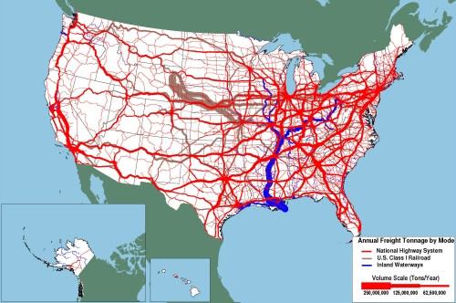

Waterways
Waterway transportation is the silent workhorse of the U.S. freight economy. The massive amount of cargo moved everyday on U.S. waterways facilitates many types of economic linkages that would not otherwise be viable. Not all shippers in the United States have access to navigable waterways, but those who do have a highly attractive option of a low-cost and reliable means of transport. The Mississippi River system and its tributaries are by far the most important waterway freight corridors in the United States. As Figure 1 illustrates, the tonnage moved on some major river systems (e.g., Mississippi, Ohio) is equivalent to or greater than the volume moved on parallel road and rail corridors.
Figure 1. Tonnage on Highways, Railroads, and Inland Waterways: 2007
Source: http://ops.fhwa.dot.gov/freight/freight_analysis/nat_freight_stats/images/hi_res_jpg/tonhwyrrww2007.jpg
On a per-ton basis, marine transportation costs are quite low. Figure 2 shows a towboat and 42-barge combination on the Mississippi. Each of these barges can hold far more cargo tonnage than a truck.
Figure 2. Barge Tow on Mississippi River, Missouri
Source: GoogleMaps
Continued Viability of the Inland Waterway Network
The challenges for protecting and preserving waterway assets are unique. The ability of waterways to consistently offer the lowest price per ton-mile[1] is not sufficient to guarantee the future of the U.S. waterway network. The most consistent challenge is to update antiquated infrastructure and to properly maintain channels. Lack of investment and maintenance for aging infrastructure and dredging shortfalls have been identified as the principal threats to waterway viability. Moreover, these problems can largely be traced to funding issues and environmental concerns.
Regarding infrastructure investment and maintenance, aging locks present a significant efficiency loss for marine shipments. The Ohio River system has been identified as the region in which delays are most significant (see Figure 3). About one quarter of the locks on the Ohio River are beyond their design life of fifty years. Peaks in delay hours are, to a large extent, caused by major maintenance activities on the older locks. In 2006, for example, river traffic was severely curtailed by the closure of the Greenup locks on the Kentucky portion of the Ohio River, which lasted for 52 days.[2]
Figure 3. Pattern of Tow Delay on Inland Waterway Corridors

Source: http://www.bts.gov/.../inland_waterway_commercial_vessel_and_tow_delay.html
An element that is sometimes seen as a strength of the U.S. waterway system, but can also be a weakness, is its heavy dependency on the U.S. Army Corps of Engineers (USACE) to perform dredging and infrastructure activities. For several decades in the last century, the USACE made steady investment in expanding and maintaining the water network of the United States, even establishing barge service to states that had never sustained viable river ports in the past. However, funding for the USACE has become uneven and unpredictable, even as the needs of the waterway system have risen due to aging infrastructure. In fact, the recently-enacted blanket ban on Congressional member-directed spending[3] is expected to have a substantial effect on the USACE funding model. While the recent American Recovery and Reinvestment Act provided a much needed surge of support for projects that had been long languishing on the planning books for lack of funding, this was only a temporary blip in an otherwise unsustainable course.
The consistency and reliability that attracts shippers to water transportation also tends to work against the mode in conveying urgency for investment. As an example, while being a significant threat to navigation, shoal areas[4] on a riverbed are far less visible than potholes on a road.
From a strategic standpoint, major support for the inland waterway system is relatively dispersed. Waterways generally cater to fewer commodity types than either truck or rail and, thus, have a narrower band of shipper advocates. Furthermore, because waterways facilitate distant trading relationships that may stretch from Minnesota to New Orleans, for example, waterway advocates tend to be rural and dispersed throughout the country, as opposed to being concentrated within a few heavily populated areas that would allow them to more readily pool their outreach efforts.
Dredging Issues
Environmental issues are another area in which the inland waterway system has been under threat. The dredging activities that are performed to maintain the minimum channel depth required for safe barge operation are generally of minimal impact to the marine environment. The reason for this is that maintenance dredging only removes recently deposited material (sand or mud) and, therefore, does not disturb established bottom-dwelling species colonies or release manmade pollutants from past industrial processes that are sometimes deposited in long undisturbed riverbeds. Dredging, however, is not completely devoid of environmental impact and can include temporary changes in the salinity or turbidity of surrounding water as well as air pollution from the vessels used in dredging.
These and other concerns have been raised in areas such as the southern stretch of the Gulf Intracoastal Waterway, where continuous maintenance dredging is seen as impacting sea grass which serves as the habitat for juvenile shrimp and fish species. A more recent example where opposition to a river dredging project has gained national attention is the case of the Delaware River. Prominent political leaders such as Governor Christie of New Jersey have strongly opposed a USACE project to widen and deepen the Delaware River to provide deeper draft vessels access to the Port of Philadelphia and other nearby marine terminals. This is primarily a capital dredging project, yet advocates have argued it is really closer a maintenance project.
More commonly, waterways suffer as the result of delays in dredging cycles from unpredictable federal funding. The uncertainty regarding dredging projects threatens to become self-sustaining as operators fail to invest in facilities that are not connected to channels with adequate under-keel clearance, thereby lowering the cargo throughput and weakening the case for further dredging. Barge operators respond to inadequately dredged channels by light-loading which reduces the efficiency of the shipment.
Encroachment of Inland Waterways
While it is a seldom an issue on major USACE-maintained river corridors, physical encroachment that creates impediments to navigation is a problem on narrow, artificial canals that are engineered to be just wide enough to allow barges to pass. In these marine corridors, even a modest encroachment into the waterway can lead to navigation restrictions. Figure 4, from a recently completed study on waterway encroachment, shows an example where residential encroachment has limited a section of the Gulf Intracoastal Waterway to one-way traffic.
Figure 4. Example of Encroachment of the Gulf Intracostal Waterway
One of the most commonly encountered impediments to navigation encountered by tug and barge operators are parked, stationary barges. (See Figure 5.) While it is a necessary and industry-accepted practice to store idle barges in the waterway, this has the effect of narrowing the available width of the waterway. Again, while this is an accepted practice, it could lead to constraints on future growth.
Figure 5. Barge Congestion on the Mississippi River near St. Louis.
Source: GoogleMaps
Another problem that many waterways have encountered is the pressure from recreational users of the publicly funded and maintained channels for private boating and vacation homes. Recreational boaters are usually allowed to use industrial waterways, however beyond a certain level of usage, this becomes a safety hazard. Developers have also started using artificial waterways to anchor elaborate “waterfront” communities. These developments, particularly along the Gulf Intracoastal Waterway, produce substantial recreational use and also have impacts on the surrounding land costs. (See Figure 6.)
Figure 6. Development Pressure Abutting Gulf Intracostal Waterway near Corpus Christi.
Source: GoogleMaps
[1] Ton-mile is a commonly used standard of measurement in freight transportation equivalent to a ton of freight moved one mile.
[2] “Corps Eyes Long-term Plans for Ohio River Locks” State Journal, 30 June 2006.
[3] This process, more commonly known as earmarking, is a key method for allocating funds to USACE-funded projects around the country.
[4] Areas of a waterway that have become too shallow to support uninhibited navigation due to the deposition of sediment